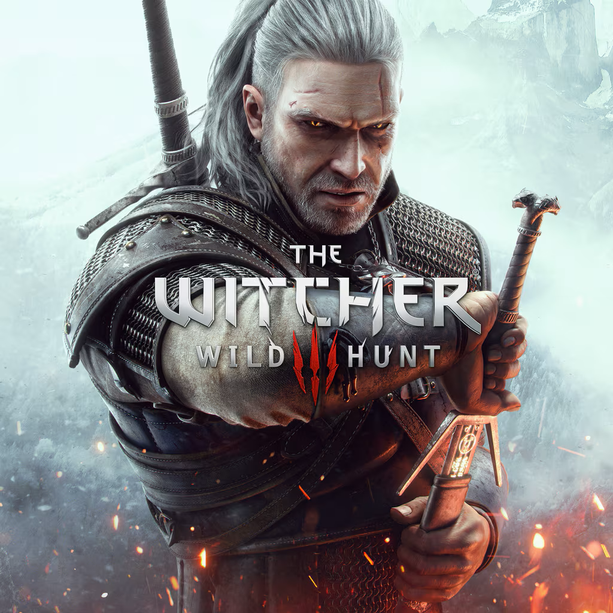

The Witcher 3: Wild Hunt
Jogo de RPG e ação de mundo aberto· 2026

Por que eu gosto
O jogo entrega uma história rica e muito envolvente, que faz você querer descobrir mais sobre esse mundo, o protagonista, Geralt de Rívia, é bem carismático. Os personagens apresentados são marcantes e os diálogos são bem escritos. Além disso, cada decisão que você toma, vai afetar o rumo da história.
Ficha técnica
| Gênero | RPG, Ação e Mundo aberto |
|---|---|
| Lançamento | 19/maio/2015 |
| Plataformas | PC, PlayStation 4, PlayStation 5, Xbox One, Xbox Series X/S e Nintendo Switch |
| Desenvolvedora | CD Projekt Red |